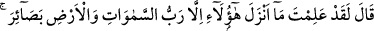
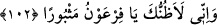

görüp kabul ettiler mi, bu âyetleri delil saydılar ve hak ehli gibi îman ettiler mi? Allah
hak ehlini, kendi emriyle doğru yolu bulan ve âyetlerine kalbden kesin olarak îman eden
kimselerden kılmıştır.
“Mûsâ onlara geldiğinde” Yâni Mûsâ ona verdiğimiz âyetleri Firavun’un huzurunda
gözler önüne serip ona tebliğle görevlendirildiği şeyi bildirdiğinde “Firavun ona: “Ey
Mûsâ! Senin büyülenmiş olduğunu sanıyorum!” Sen sihirlenmişsin ve aklın karışmış.
Bu yüzden böyle akla sığmaz şeyler söylüyorsun “dedi.” Bu söz, yine Firavun’un
söylediği: “Size gönderilen peygamberiniz gerçekten de delidir.” (eş-Şuarâ, 26/27)
sözünün benzeridir.
Âyetteki ‘meshûr (büyülenmiş)” kelimesi sihir sâhibi anlamında nisbet için de
kullanılmış olabilir. Nitekim et-Te’vîlâtü’n-Necmiyye’de şöyle der: “Firavun yakîn ehli
değil de zan ehli olduğu için yanıltıcı zan nazarıyla Mûsâ’yı sihirbaz, mûcizeleri sihir
gördü.”
102. (Mûsâ Firavun’a:) “Pekâlâ biliyorsun ki bunları birer ibret olmak üzere,
ancak göklerin ve yerin Rabbi indirdi. Ey Firavun! Ben de senin hakikaten
mahvolduğunu sanıyorum!” dedi.
Mûsâ, Firavun’a: Ey Firavun! Dilinle söylemesen de gönlünle “Pekâlâ biliyorsun ki”
et-Te’vîlâtü’n-Necmiyye’de der ki: “Eğer akıl nazarıyla baksaydın bilirdin ki”
“bunları” yâni ızhâr ettiği bu mûcizeleri “birer ibret olmak üzere,” yâni sana benim
doğruluğumu gösteren açık ve açıklayıcı olarak, her biri benim peygamberliğime delil
olan apaçık âyetler olarak “ancak göklerin ve yerin Rabbi” yaratıcısı ve idarecisi
“indirdi.” Ancak sen inat ediyor, büyüklük taslıyorsun. et-Te’vîlâtü’n-Necmiyye’de
şöyle der: “Oysa basîret ve akıl nûruyla görülür.”
Şeyh-i Ekber (k.s.) şöyle demiştir: İlim ancak cehâleti uzaklaştırması bakımından
saâdet getirir. Onun için ilmin sana perde olmasın. Çünkü Firavun, Mûsâ (a.s.)’ın
peygamber olduğunu, İblis, Âdem (a.s.)’ın durumunu, yahudiler de Hz. Muhammed
(s.a.)’in peygamber olduğunu ve diğer peygamberlerden üstün olduğunu biliyorlardı.
Bununla birlikte îmanda muvaffakiyetten mahrum kaldılar. Zamanla bu bilgileri onları
bedbaht yaptı. Allah Teâlâ: şöyle buyurmuştur: “Kendileri de bunlara yakînen
inandıkları halde, zulüm ve kibirlerinden ötürü onları inkâr ettiler.” (en-Neml,
27/14)
Kemâl Hocendî şöyle der:
Muhakkıkların ilminde cedel yoktur